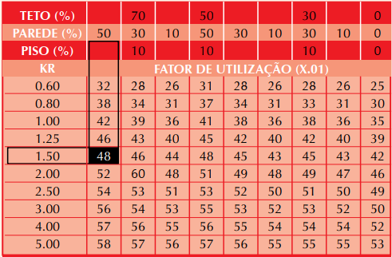

Esta ferramenta permite calcular a iluminação necessária para um ambiente de acordo com a NBR 5413.
Método dos lúmens:
1. K = c x l / h x ( c + l )
onde: c = comprimento do ambiente
l = largura do ambiente
h = altura de montagem
h = distância do teto ao plano de trabalho
pd = pé-direito
hs = altura de suspensão da luminária
ht = altura do plano de trabalho
2. Consulte a tabela para determinar o Fator de Utilização das luminarias de acordo com o abiente:

3. Para o fator de manutenção, é recomendado utilizar 0,6 por padrão, pois em contexto de avicultura,
o ambiente é considerado sempre sujo.
4. Dimensionamento: N = Emed x A / n x φn x U x FM x FFL
onde: N: número necessário de luminárias
Emed: iluminância média (lux)
A: área do ambiente (m2)
n: número de lâmpadas em cada luminária
φn : fluxo luminoso de cada lâmpada (lm)
U: fator de utilização
FM: fator de manutenção
FFL: fator de fluxo luminoso do reator
5. Quando o número de luminárias é conhecido, a iluminância média pode ser calculada pela fórmula:
Emed = N x n x φn x U x FM x FFL / A
6. Os demais cálculos relacionados a consumo de energia e potência instalada são feitos com
base nos dados fornecidos, como potência de cada lâmpada e o número de lâmpadas por luminária.
Consulte a NBR 5413 para mais informações.